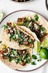

Carne Asada Tacos

These Carne Asada Tacos are flank steak, Mexican-inspired street tacos!
Just load your tortilla with juicy steak bites, avocado, onion, cotija cheese and fresh cilantro.
Ingredients
- Carne Asada
- Tortillas
- Onion
- Lime
- Cilantro
- Cotija Cheese
- Avacado
- Sour Cream
Steps
- Grill your steak.
- Grab a tortilla and slam some avocado and sour cream into it.
- Then add a good portion of carne asada, sprinkle chopped onion, fresh cilantro and cotija cheese in there.
- Squeeze some fresh lime on top and BAM! Amazing Carne Asada Tacos every time!